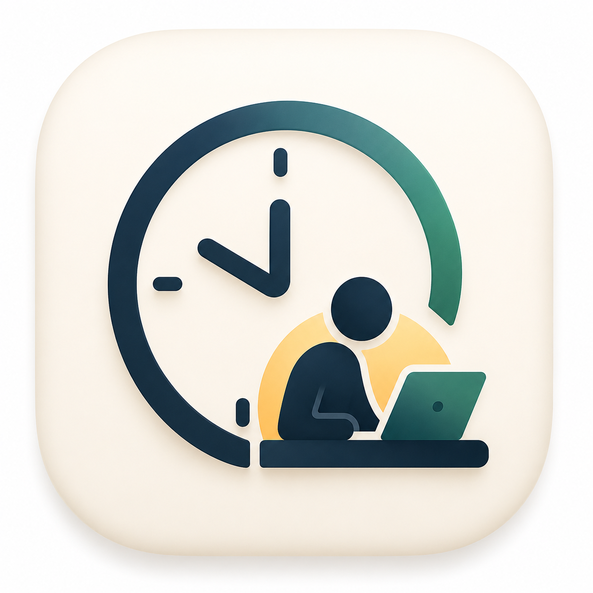

WorkLog근무로그 지원
근무로그 사용 중 일정, 체크인/체크아웃, 휴게/일시정지, 연장근무, 메모, 위젯, 백업, 리포트와 관련해 도움이 필요할 때 사용하는 공식 지원 페이지입니다.
문제 해결
반복 일정이 맞지 않으면 기준일과 패턴 순서를 확인하세요. 특정 날짜만 다르면 일괄 변경이나 날짜 예외를 사용하세요. 위젯이 갱신되지 않으면 앱을 한 번 열어 최신 상태를 저장하세요. 알림은 iOS/Android 알림 권한과 앱 설정을 함께 확인하세요.
데이터
근무 데이터는 기본적으로 기기 안에 저장됩니다. 휴대폰 교체 전에는 백업/복구 기능을 사용하세요.
WorkLog Support
Official support page for help with schedules, clock in/out, breaks, pause time, overtime, notes, widgets, backups, and reports.
Troubleshooting
If repeating schedules look wrong, check the anchor date and pattern order. For only selected dates, use batch change or day overrides. If widgets do not update, open the app once to save the latest state. For reminders, check both OS notification permission and app settings.
Data
Work data is stored on the device by default. Use backup/restore before changing phones.
勤務ログ サポート
勤務予定、出勤/退勤、休憩、一時停止、残業、メモ、ウィジェット、バックアップ、レポートに関する公式サポートページです。
トラブルシューティング
繰り返し予定が合わない場合は基準日とパターン順序を確認してください。特定日だけ変更する場合は一括変更または日別例外を使ってください。ウィジェットが更新されない場合はアプリを一度開いて最新状態を保存してください。通知はOS権限とアプリ設定の両方を確認してください。
データ
勤務データは既定で端末に保存されます。端末変更前にバックアップ/復元を使用してください。
WorkLog Support
Offizielle Supportseite fuer Dienstplaene, Arbeitsbeginn/-ende, Pausen, Unterbrechungen, Ueberstunden, Notizen, Widgets, Backups und Berichte.
Fehlerbehebung
Wenn Wiederholungen falsch wirken, pruefen Sie Startdatum und Musterreihenfolge. Fuer einzelne Tage nutzen Sie Sammelaenderung oder Tagesausnahmen. Wenn Widgets nicht aktualisieren, oeffnen Sie die App einmal. Fuer Erinnerungen pruefen Sie OS-Berechtigung und App-Einstellungen.
Daten
Arbeitsdaten werden standardmaessig auf dem Geraet gespeichert. Vor einem Telefonwechsel Backup/Wiederherstellung nutzen.
工作日志支持
关于排班、上班/下班、休息、暂停、加班、备注、小组件、备份和报告的官方支持页面。
故障排除
如果重复排班不正确，请检查基准日和模式顺序。仅修改特定日期时，请使用批量修改或日期例外。小组件未更新时，请打开一次应用保存最新状态。提醒问题请同时检查系统通知权限和应用设置。
数据
工作数据默认保存在设备上。更换手机前请使用备份/恢复功能。
Soporte de WorkLog
Pagina oficial de soporte para horarios, entrada/salida, descansos, pausas, horas extra, notas, widgets, copias de seguridad e informes.
Solucion de problemas
Si los turnos repetidos no coinciden, revisa la fecha base y el orden del patron. Para fechas concretas usa cambio por lote o excepciones diarias. Si el widget no se actualiza, abre la app una vez para guardar el estado reciente. Para recordatorios revisa permisos del sistema y ajustes de la app.
Datos
Los datos de trabajo se guardan por defecto en el dispositivo. Usa copia/restauracion antes de cambiar de telefono.
Suporte do WorkLog
Pagina oficial de suporte para escalas, entrada/saida, pausas, intervalos, horas extras, notas, widgets, backups e relatorios.
Solucao de problemas
Se escalas repetidas parecerem erradas, confira a data base e a ordem do padrao. Para datas especificas use edicao em lote ou excecoes diarias. Se o widget nao atualizar, abra o app uma vez para salvar o estado recente. Para lembretes confira permissoes do sistema e ajustes do app.
Dados
Dados de trabalho ficam por padrao no dispositivo. Use backup/restauracao antes de trocar de telefone.